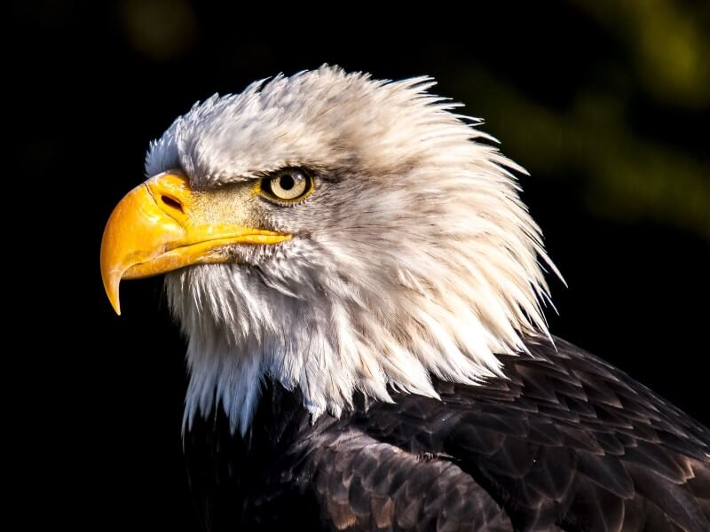
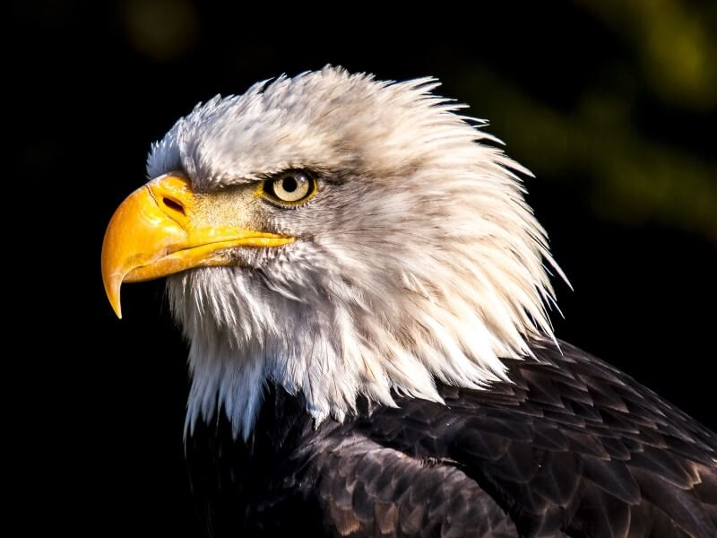

This website features photographs of animals from Pixabay.com.
The key to animal photography is patience.
It can take a long time to get the right lighting and the best view of the animal. When photographing animals, you do not have a lot of control... you need to wait for them.
 
